IMX Punks IMX Punks 由动画师 /devs 团队创建。不隶属于幼虫实验室。 每个 IMX Punk NFT 的统一费率相同：👉 0.05 ETH（无 Gas 费）。以优惠价格预售。前往 Discord 寻找 deets！ 该集合中将
IMX Toadz IMXToadz 是 ImmutableX 上第一个包含 600 个独特随机生成的 Toadz 的集合！ Toadz 的目标是为尽可能多的人带来积极影响，围绕他们建立一个 DAO/社区，由社区钱包和投票系统支持，
Incognito Incognito (ICON) 项目由 NFT 收藏家、艺术家和专业人士创建，旨在为 NFT 社区带来独特而特别的东西。该集合由 10,000 个随机生成的独特角色组成，这些角色作为 ERC-721 令牌生活在以太
Infinites AI Infinites 是在铸造过程中产生的独特的 512 件艺术品的集合。每个无限都是利用两个生成过程的交集创建的：一个 StyleGAN 训练有来自大师的艺术作品的策展，以及一个链上生
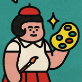 JPG PEOPLE by Debbie Tea JPG People 是由 Debbie Tea 创建的 8,888 个基于单词的 AI 生成 NFT 的集合。在我们的人工大脑（我们称他为 Fred）的帮助下，我们将您的信息转换为独一无二的 JPG，该 JPG 由
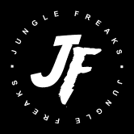 JUNGLE FREAKS Jungle Freaks 是传奇的 Hustler Mag 漫画家 George Trosley 的 100% 手绘怪胎系列。这 10,000 个 Freaks 在以太坊区块链上生活和呼吸。 这一年是 2077 年，人类消失了，僵尸已经占领了城市并夺取了大量的军
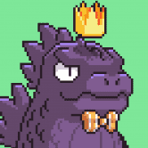 Kaiju Kingz KaijuKingz 源于 CyberKongz 持有者和社区成员 OhDots 在他新成立的公司：Augminted Labs 下的思想。 KaijuKingz 希望通过促进 Web3 社区之间竞争和协作的协同机制来扩展其社区。该系列将
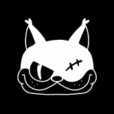 KCG KCG 是生活在 Metaverse 中的 3D 小猫，由才华横溢的 Nicolas Morel 和 Amandine Comes 制作。这两位法国国民曾为 Marvel、迪士尼、Neftflix、华纳兄弟等公司工作。 该系列有 300
Koala Intelligence Agency 总共有 10,000 只独特的考拉经过全面培训并准备部署。他们是伪装大师，在没有留下一丝证据的情况下从公众中筛选。 Koala Intelligence Agency NFT（简称 KIA）是 10000 个拥有个人
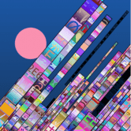 Kohi x eepmon CityLights Kōhī CityLights 是由数字艺术家 eepmon 创作的一个系列。受到东京充满活力的城市景观的启发，eepmon 经常前往大都市寻找他的创意灵感来源。 Kōhī CityLights 限量发
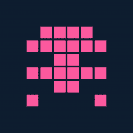 Kolobok Adventures Kolobok.io — 培育独特的 Kolobok 并进行冒险以获得 NFT 奖品！ 收集、交易、培育 Koloboks，然后将它们送去冒险以赢取奖品！ 由 CryptoLions 团队创建并由 SimpleAssets Standard 提供支持的游戏 K2
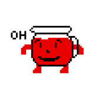 Kool Bar Kool Bar 由 2 个代币提供支持：KOOL 和 AID。 KOOL 是 Uniswap 上可交易的固定供应量的主要代币。 AID 是一种补充通胀代币，可以通过质押 KOOL 和 KOOL/ETH LP 代币来进行养殖。 Kool
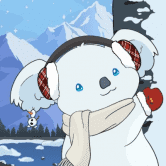 KuddlyKoalas Kuddly Koalas 是一个包含 8,888 个 NFT 的可爱集合！ 每个铸币厂将把收入的 20% 捐赠给支持考拉栖息地的慈善机构。 Kuddly Koalas 收集的所有版税的 50% 也将捐赠给慈善机构。 公开发布后 48
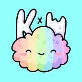 Kumo x World Residents 一定比例的销售额用于儿童和心理健康慈善机构 我们的路线图包括儿童故事书、用于进化的 Kumochis（如宠物）、KxW Coins 和未来游戏开发。快来加入
Lamb Duhs Lamb Duhs Tron 是一个 NFT 集合，包含可爱而聪明的数字插图小羊头像，由 350K+ 可能的特征组合生成，具有丰富多样的面孔、服装和颜色。 Lamb Duhs Tron 托管在 Tron 区块链上。 Lamb Duhs Tron
Doge Pound Puppies 来自 The Doge Pound 的创造者来自 Doge Pound Puppies。他们很可爱，很可爱，也准备登月了！收集自己一个成年人和一只小狗，在路上你可能会解锁一些特别的东西！
Dogecolors doge colors 是多边形网络上的 NFT dapp。如果没有人认领，您可以免费铸造任何颜色。有超过 24,000 种命名颜色可供选择。每种颜色都有与之相关的稀有性。Dogec
Dogs Of Elon The Dogs of Elon – 登月交易者的 NFT。 DoE 是我们的激情项目！我们致力于创建一个 CryptoPunks 替代品来代表我们，即 meme 硬币持有者。我们都见证了 meme 币社区的力量及其不断挑
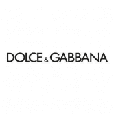 Dolce&Gabbana: DGFamily Glass Box DGFamily 玻璃盒可在未来几周在 UNXD 上访问的链上展示中兑换成分层 DGFamily 盒。 DGFamily Boxes 是打开 Dolce&Gabbana NFT 世界的钥匙——一个由典型的意大利奢侈品牌直接与 UNXD 合作的数字、物理和体
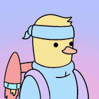 Doodle Duckling Stamp Doodle Duckling 邮票套装是一张优质邮票专辑，内含不同主题的著名收藏邮票。由 Doodle Duckling 的世界级艺术家精心制作，灵感来自人类历史上难忘的时刻，这些邮票是永恒和怀旧
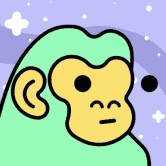 Doodle Kongz Doodle Kongz 是一个 NFT 项目，灵感来自著名的 Doodles 和 CyberKongz。 Doodle Kongz，又名 Dongz，具有作为灵感的项目中的流行特征。有许多不同的表情、帽
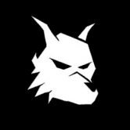 DopeWolves Dope Wolves 是 Oasis Network 上的第一个 Wolves NFT 系列，具有原创、独家和手绘设计。我们的艺术家创造了 161 种资产，并将它们与 10 个特征配对。在该系列中，所有资产都按稀有度进
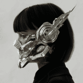 Dreamers by Yugal Dreamers 是一个基于时尚与技术之间旅程的系列。一件简单的衣服，可以解决复杂的全球问题，或在我们生活的反乌托邦中生存。重新构想一个我们可以探索新思想和
DreamHaven DreamHaven 代币 (DHV) 是 DreamHaven 生态系统原生的 BEP-20 交易数字资产。它是一种实用型代币，旨在提供 DreamHaven 生态系统的利益，并能够获得有吸引力的机会，以及数字资产领域的创新产品
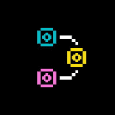 Fewmans Fewmans：第一个链上进化实验室 在前往 Superfewman 的路上将您的 5,000 名男性和 5,000 名女性 Fewmans 杂交。 为每个品种赚取少量金币！ 杂交你的 5,000 雄性 和 5,000 名女性 在前往 Superfewman 的
First First NFTs 第一个关于 NFT 的链上生成文本 NFT。 FIRST 是讽刺性生成文本的集合。它既嘲笑又深情地纪念了大约 2021 年 9 月 NFT 加密文化的许多方面。所有初级销售和二级销售的
Flovatar Flovatar 是下一代 PFP 项目，建立在 Flow 之上，收藏家在其中发挥创意，塑造自己独特的角色。参与者将能够在超过 1000 亿种不同组合的七个主要类别中选择他们最喜欢的组
Fluf World FLUF World 拥有 10,000 只独特的 3D 动画兔子，它们以 NFT 的形式生活在区块链上。 只有一件事 FLUF 比胡萝卜更喜欢，那就是兴奋剂节拍！因此，没有舞蹈和配乐，任何 FLUF 都不完
Fly Frogs Fly Frogs 是 10,000 个随机生成的 NFT 的集合。没有两只青蛙是完全一样的。青蛙由 180 多种手绘资产组成，具有 6 个特征： 背景 (25) 皮肤 (23) 头 (52) 眼睛 (14) 嘴巴 (17) 服装 (56)
Forgotten Runes Forgotten Runes Wizard’s Cult 是 10k Wizard NFT 的集合。每个向导都是独一无二的，并且有自己的名字。此外，所有巫师艺术都是在链上完全编码的。 随着我们的邪教为社交媒体和我们独一
Fragments By James Jean 多学科视觉艺术家 James Jean 展示了 Fragments (2022)，这是由数字艺术平台 Outland 委托的全新手绘数字艺术系列。 这个雄心勃勃的新系列的灵感来自艺术家即将建造的大型
FVCK_CRYSTAL// FVCK_CRYSTAL// 是由 FVCKRENDER 设计的 4169 颗宝石的集合。这些 NFT 将允许用户参与 FVCKRENDERVERSE// 的未来活动、抽奖和专属区域。 没有 FOMO 废话曲线，hodlers 将能够在公开发售之前烧掉他们的
Galaxy Eggs (art)tificial 是一个探索科技与艺术边界的艺术工作室。我们的第一个项目是 Galaxy Eggs——一个由 9,999 个虚拟世界的 Eggs 组成的生成集合，它们存在于以太坊区块链上。我们
Galaxy Fight Club Galaxy Fight Club (GFC) 不仅仅是一个头像项目，它还是一款实时 PvP 游戏，将所有其他不同的头像集合汇集到一个平台上。 当你想到 Super Smash Bros 时，它之所以如此有趣，是因为你有
Gambling Apes Official 稀有度和规格 Gambling Apes 是由 120 多个特征创建的 7,777 个独特角色的集合。有些特性非常罕见，只出现一次。所有 Gambling Apes 都是定制生成的，在以太坊区块链上注册，并托管在
Gangster Skulls BNBCHAIN 上的 777 个头骨，黑帮头骨代表了曾经充满思想、想法、梦想和抱负的头脑和思想。身体已经死去，但梦想还在。您可以质押 Skulls 以获得 USDT 奖励 关于黑帮头骨 来自


")